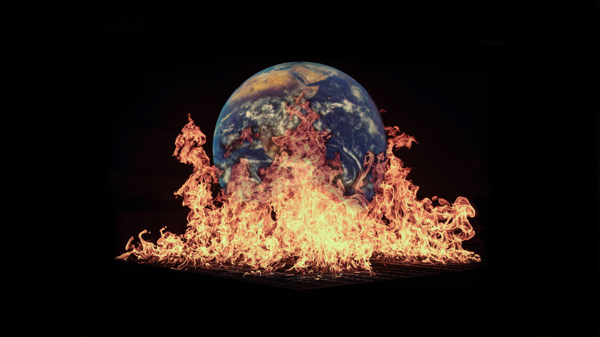

GRUNDLÆGGENDE WEB
i tema 02- grundlæggende web blev vi introduceret for principper for komposition og layout, her kom vi bla. ind på gestaltlovene, farver, billedkomposition og Kompositionsprincipper. derudover kom vi kort ind på brug af photoshop og fik et par øvelser til det, her lavede vi et splash billede. På mit splash billede har jeg brugt en rolig trekantskomposition og whitespace. dette gjorde jeg fordi mit site hurtigt kunne blive for “tungt”, da baggrunden er en helt sort farve, derfor valgte jeg at lave splash billedet med ét fokuspunkt. Jeg valgte heller ikke at bruge så mange farver men med én farve der dominerede (Kvantitetskontrast). Gennem hele sitet brugte jeg gestaltloven, loven om lukkethed, dette gjorde jeg ved at give mit content en border. vi lærte også at opsætte et HTML dokument samt brug af CSS. Vi lærte om semantiske tags indenfor HTML, herunder ul, nav, main, footer, h1 og p. Vi lærte styling med css og media queries, media queries er med til at gøre sitet responsivt. Indenfor styling med CSS brugte vi bla. grid, det brugte vi til at bestemmer hvor eks. billeder eller tekst skulle ligge på siden. vi fik udleveret et wireframe og layout diagram. Et wireframe bliver brugt til opstillingen af siden, hvor skal hvert element være på siden. Et layout diagram er et diagram over hvilke semantiske tags der skal være inden i et andet tag, det er altså med til at gøre ens kodningsproces mere overskuelig
Hvad ville jeg gøre anderledes?
I starten af temaet kom vi ind på forskellige stile indenfor og fik tildelt en stil, min gruppe fik tildelt modern futuristic webdesign - 3D and fluorescent colors. derfor ville jeg bruge lidt JavaScript med eksempelvist en burgermenu og nogle animationer på f.eks. ui elementerne da dette er en karakteristisk for stilen.
DOKUMENTATION/ INSPIRATION